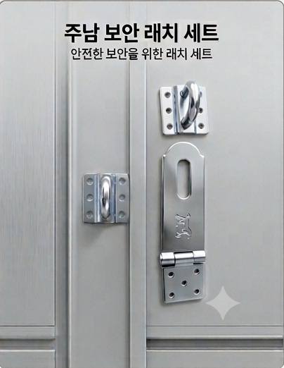
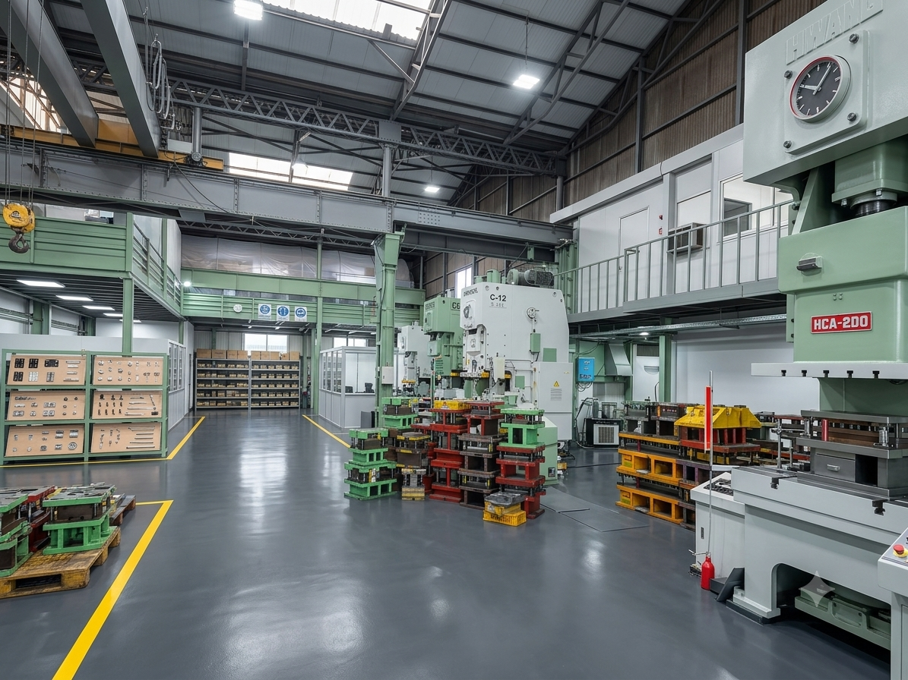
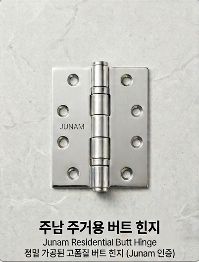
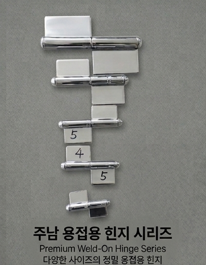

걸이쇠
다양한 규격과 하중에 맞춘 걸이쇠를 생산하며, 용도에 맞는 맞춤 제작도 가능합니다.
PRECISION HINGE & HARDWARE MANUFACTURER
주남테크는 걸이쇠, 백경첩, 스텐경첩, 용접경첩 등 다양한 경첩·철물을 전문적으로 생산하는 제조기업입니다. 정밀한 가공과 엄격한 품질관리로 오래 쓸 수 있는 제품을 만듭니다.

주남테크는 걸이쇠, 백경첩, 스텐경첩, 용접경첩을 전문으로 생산하는 경첩·철물 제조기업입니다. 문과 가구, 산업 설비 등 다양한 곳에 쓰이는 경첩을 소재 선정부터 가공, 용접, 표면처리까지 자체 공정으로 관리합니다.
"작은 부품이 전체의 내구성을 좌우한다"는 원칙 아래, 원자재 검수부터 출고 전 최종 검사까지 전 과정에서 품질 기준을 지키고 있습니다.

다양한 규격과 하중에 맞춘 걸이쇠를 생산하며, 용도에 맞는 맞춤 제작도 가능합니다.

내구성과 개폐감을 고려한 백경첩으로, 문과 가구 등에 폭넓게 사용됩니다.

부식에 강한 스테인리스 소재로 제작해, 습기나 외부 환경에도 안정적입니다.

철제 구조물과 산업 설비에 적합하도록 용접 방식으로 결합력을 강화했습니다.